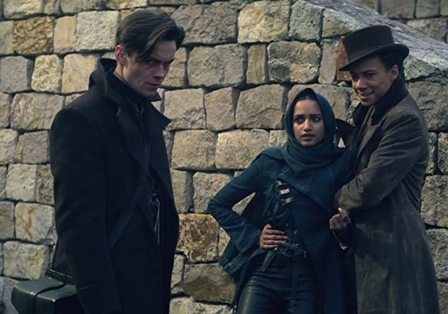
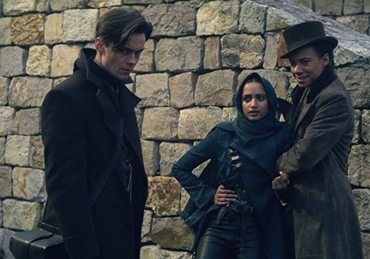
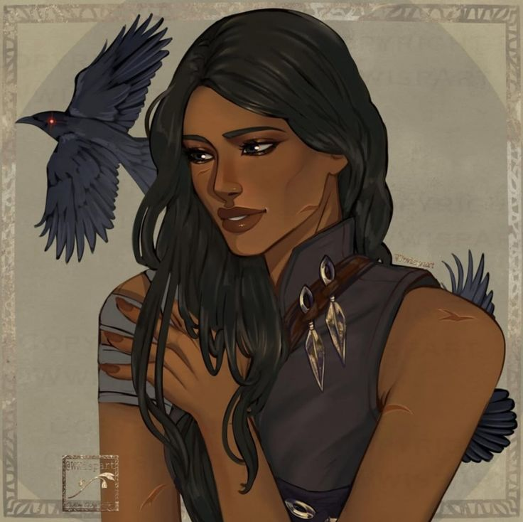
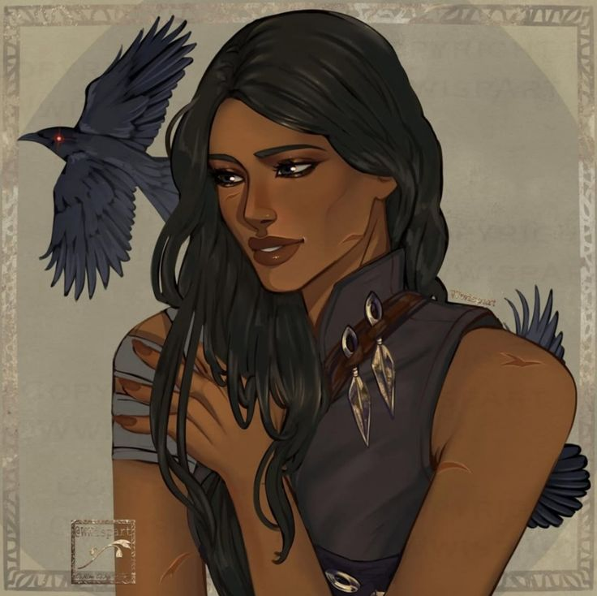

Инеж Гафа
Призрак, шпионка, сердце команды
Инеж Гафа — бесшумная разведчица и акробат, известная в Кеттердаме как Призрак. Она передвигается по крышам так, словно рождена для полёта, и редко оставляет следы.

Биография
Семья Инеж была бродячими акробатами, и она выросла, путешествуя по Равке в сулийских караванах и выступая с семьей. В детстве она научилась ходить по высокому канату босиком со своим отцом и кузенами и за это время она только единожды упала. Ей было намного комфортнее на высоте, чем кому либо в семье, к тому же она любила прогуливаться в воздухе.
За несколько дней до того, как ей исполнилось 14, она была со своей семьей на западном побережье близ Ос Керво, выступая на карнавале. Инеж проснулась ото сна и была схвачена работорговцами рано утром, а затем продана Танте Хелен, владелице дома удовольствий в Кеттердаме, где она была вынуждена работать в Зверинце по контракту.
Когда Инеж впервые встретила Каза Бреккера, она случайно услышала, как он разговаривал с Хелен, спрашивая ее о клиентах. Позже Инеж подошла к Казу и предложила ему помочь, но он не ответил и ушел. Каз вернулся на следующий день, чтобы выкупить ее Контракт у Хелен, и предоставил Инеж выбор: присоединиться к Отбросам или нет. Инеж вступила в банду через несколько дней после ее пятнадцатилетия. Спустя какое-то время, Каз подарил Инеж ее первый нож, научил как лучшее взломать сейф и обчищать карманы, а так же назвал ее Призраком.
Читать подробнее
«Шестёрка Воронов»
Инеж смотрит переговоры между Черными Пиками и Отбросами. Она забралась на крышу Церкви Бартера и мешает городскому охраннику Берту Ван Даалу стрелять в Отбросов. После завершения переговоров Инеж увольняет Ройакке из Клуба Воронов по приказу Каза. Когда Каз возвращается в Клепку, чтобы доложить Перу Хаскелю о выполненной задаче, Инеж подглядывает за их разговором из скрытой решетки в шкафу на втором этаже. Затем она следует за Казом в его комнату, где Каз объясняет, что их наняли на работу для Яна Ван Эка.
Инеж, одетая в костюм Серого Бесёнка, прибывает в тюрьму Хеллгейт на Адское шоу отдельно от Каза и Нины. Инеж оценивает Маттиаса Хельвара и одевает его как в Зверской Комедии, чтобы они могли сбежать из Хеллгейта.
В то время как она в Западном обруче покупает припасы для поездки во Фьерду, к Инеж пристает Танте Хелен. Потрясенная и растеряннная, Инеж бежит в гавань, а после этого быстро вступает в завязавшийся бой в доках. Омен, один из Черных Пиков, ловит ее и наносит удар в бок; ей удается ударить и его, но Инеж тяжело ранена. Инеж готовится покончить с собой, чтобы избежать поимки, но Каз находит ее и несет на шхуну. По дороге она падает без сознания из-за своей раны.
Нина заботится об Инеж на «Феролинде» в течение трех дней, прежде чем Инеж просыпается. Из разговоров на корабле Инеж узнает немного о жизни Джеспера и Каза. После того, как «Феролинд» причаливает, Вороны отправляются через север во Фьерду, Нина пытается научить Инеж фьерданскому языку.
Вороны достигают Джерхольма и завершают подготовку к проникновению, а Инеж и Маттиас обсуждают значение слова "дом" и Нину Зеник. Когда они устраивают засаду и входят в тюремный фургон, Инеж замечает панику Каза из-за контакта с человеческой кожей и помогает ему успокоиться, разговаривая с ним. В тюрьме Ледяного двора Вороны понимают, что мусоросжигательный завод теперь работает днем, разрушая их план побега. Тем не менее, Уайлен находит в прачечной тапочки Инеж, изготовленные фабрикатором, и перчатки Каза, и Инеж начинает взбираться по шахте мусоросжигателя. Тем не менее, ее туфли начинают плавиться, а жара невыносима, и Инеж подумывает о том, чтобы упасть и сдаться.
Начинается дождь, охлаждающий Инеж и шахту мусоросжигателя, и Инеж решает, что она хочет сделать со своим будущим: уничтожить работорговцев, снабжающие дома удовольствий по морю. Окрылённая новой целью, Инеж взбирается на вершину шахты и закрепляет веревку, чтобы остальные Вороны могли подняться наверх. Джеспер и Нина исцеляют ее ноги, которые срослись с резиной ее туфель. Однако тюрьма находится под сигнализацией Желтого протокола, не позволяющей Воронам пройти контрольно-пропускные пункты, чтобы попасть на Белый остров.
Инеж предлагает ей и Нине войти со Зверинецем, переодевшись соответственно сулийкой и каэлкой. Инеж задерживают на контрольно-пропускном пункте, где она встречает Хелен, которая узнает Инеж. Инеж душит Хелен и крадет ее бриллиантовое колье, прежде чем охранники Фьерды уводят ее обратно через тюремные ворота. Джеспер и Уайлен освобождают Инеж от охранников, и Инеж отдает сокомандникам бриллиант Хелен, чтобы сделать сверло. После того, как они вырезают отверстие в окне, Инеж прыгает через него и приземляется на крышу одного из танков, который она использует для уничтожения стекла, и все трое пробивают стену Ледяного двора в танке.
Вернувшись на «Феролинд», Инеж и Нина обсуждают свои планы на будущее. Инеж и Каз обсуждают состояние своих отношений; Каз просит Инеж остаться с ним в Кеттердаме, но Инеж не желает довольствоваться таким малым.
Когда они возвращаются в Кеттердам, Инеж, Каз, Джеспер, Маттиас и Уайлен (замаскированный под Кювея Юл-Бо) отправляются в Вельгелюк для обмена с Ван Эком. Ван Эк понимает, что Каз беспокоится об Инеж, и ее захватывает один из его Шквальных, чтобы использовать в качестве рычага против Каза.
Внешность
У Инеж бронзовая кожа и «маслянисто-черные» волосы, которые она обычно заплетает в тугую косу, но когда коса распущена, волосы очень длинные. Ее тело описывают как угловатую, худощавую фигуру. Инеж носит стеганый жилет, бриджи и тунику. Когда выполняет задания Каза, она носит капюшон. Глаза у нее темно-карие, почти черные.
Личность
«Но как насчет всех остальных? Как насчет безродных и бесталанных, девочек-невидимок? Мы учимся держать голову так, словно на ней – корона. Мы учимся искать волшебство в обыденности. Вот как выживали обычные люди, не избранные, без королевской крови в жилах. Даже если мир ничего тебе не должен, ты все равно от него что-то требуешь.» — Инеж. Продажное Королевство, глава 35
Инеж в основном известна своей сдержанной натурой. Умственно она невероятно сильна, и идет к своей цели не колеблясь. Она спокойна и морально непоколебима, не боится высказывать свое мнение, когда чувствует, что это необходимо. Она скептически относится к большинству людей, но внешне не жестока и готова предложить свою дружбу тем, кто доказал, что они хорошие люди. Инеж чтит обычаи своего народа, часто повторяя сулийские пословицы в качестве совета и ответов на вопросы Воронов. Она чувствует себя в большей безопасности, имея при себе ножи, предпочтительно свои собственные, и находит утешение в силе своего титула «Призрак».
Навыки и способности
Благодаря своему акробатическому опыту, Инеж обладает отличными навыками скалолазания, ловкостью и координацией тела. У нее также есть дар скрытности, она никогда не издает ни звука, когда движется. Каз отмечал, что у нее нет даже запаха. Она смертельно опасна со своими ножами и может убить или вывести из строя при необходимости.
Интересные факты
- Инеж боится замкнутых пространств
- Она молится Святым перед опасными заданиями
- Её прозвище — Призрак — известно по всему Кеттердаму
 



 
